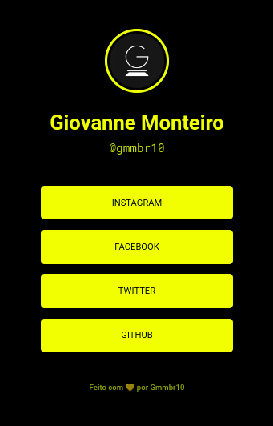

Quem é Gmmbr10?
Sou Giovanne Monteiro de Melo, desejo me tornar um desenvolvedor web. Atualmente, estou estudando na ETEC de Santa Isabel para tornar este sonho uma realidade.

Sou Giovanne Monteiro de Melo, desejo me tornar um desenvolvedor web. Atualmente, estou estudando na ETEC de Santa Isabel para tornar este sonho uma realidade.
Clique aqui para abrir o projeto
O projeto acima foi desenvolvido para aprender e práticar HTML e CSS. Ele foi idealizado na Maratona-Explorer 2 da Rocketseat. Tenho um carinho especial por esse projeto, pois foi o meu primeiro a ficar acessivel para todos!!